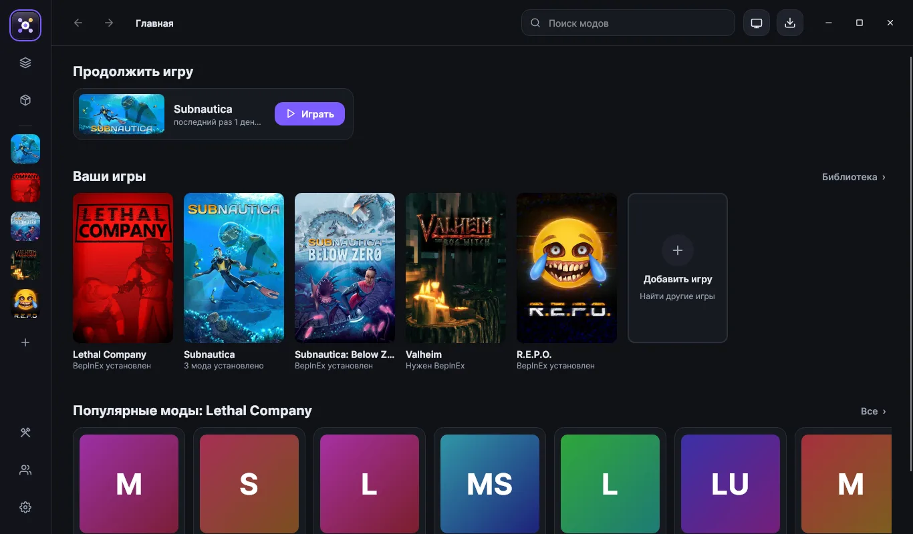
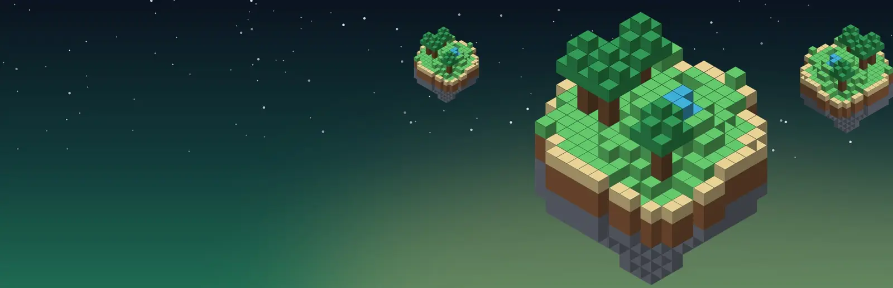
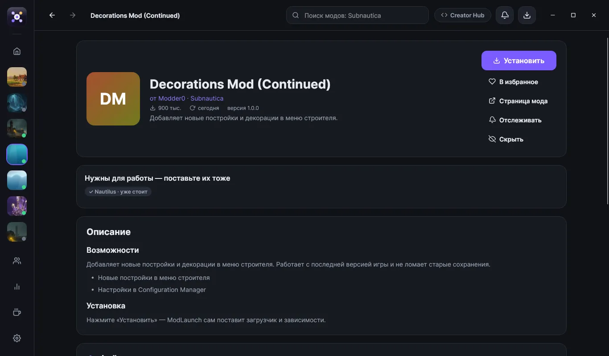
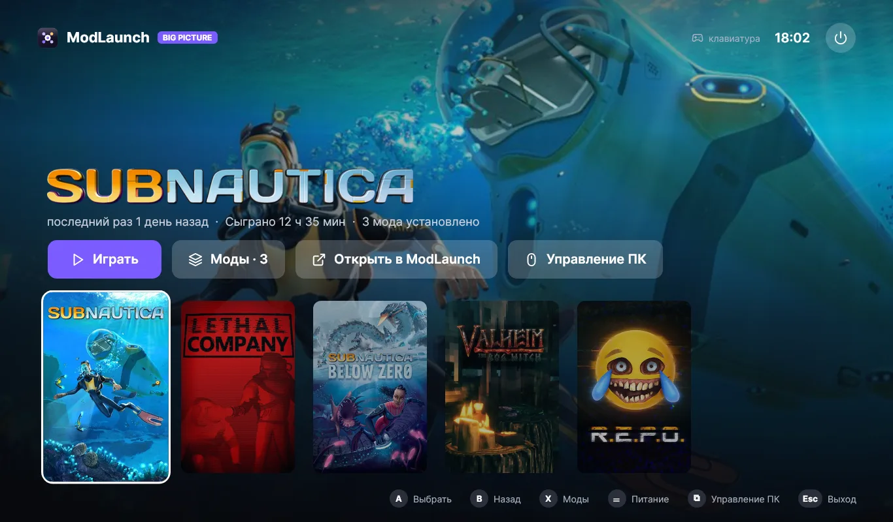
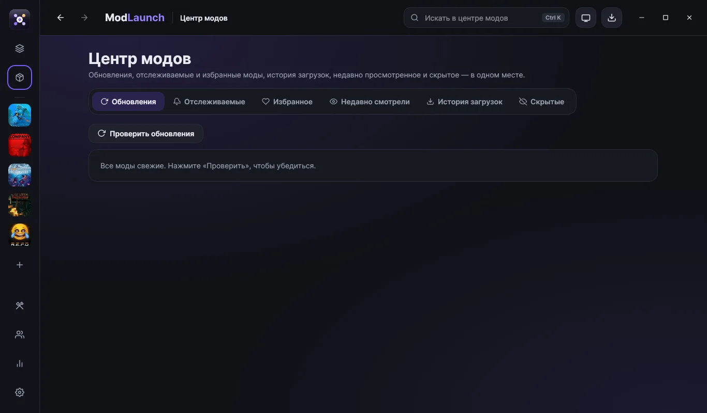
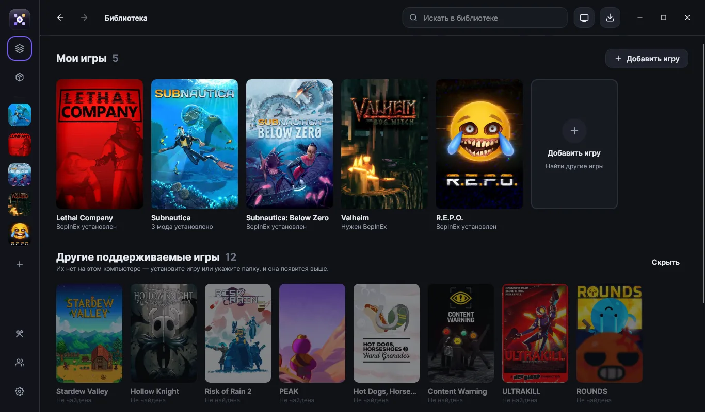
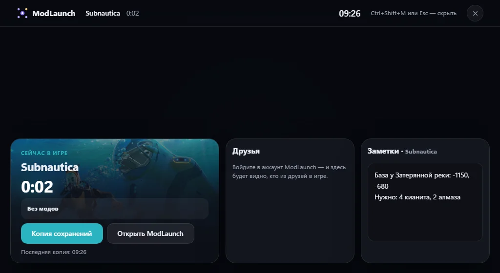
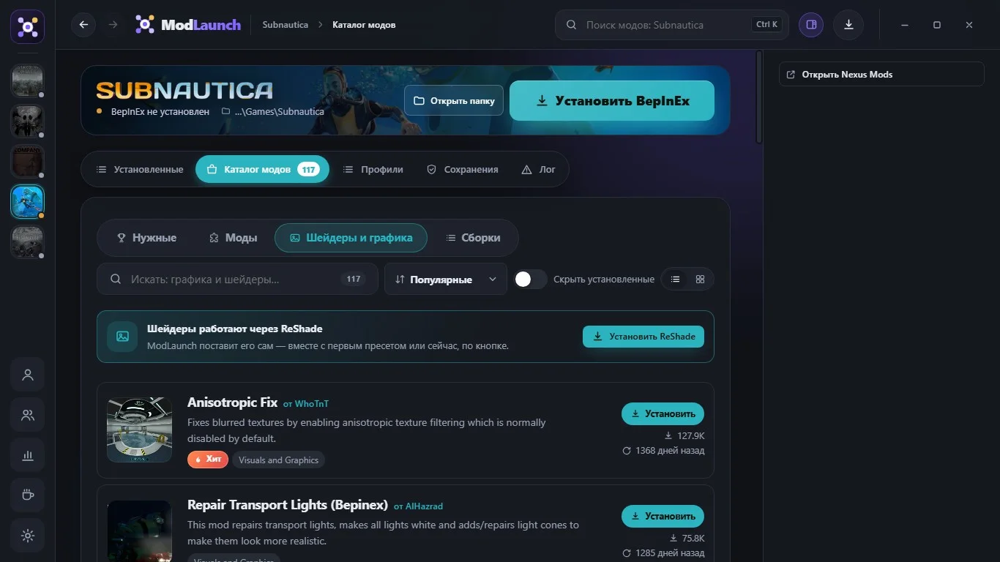

Найдёт игры
Steam, Epic, GOG и любые папки — ModLaunch обходит диски сам и показывает, что нашёл.
ModLaunch сам находит игры на компьютере, ставит загрузчик и моды со всеми зависимостями, а потом следит за обновлениями. 18 игр — от Stardew Valley до Minecraft — и любая другая по кнопке «+».

Никаких «скачайте архив, распакуйте в папку, переименуйте dll». ModLaunch делает это за вас.
Steam, Epic, GOG и любые папки — ModLaunch обходит диски сам и показывает, что нашёл.
BepInEx, SMAPI, Modding API, Fabric или Forge — нужный ставится сам и нужной версии.
Нажали «Установить» — мод скачан с сайта автора вместе со всем, что ему нужно, и уже работает в игре.
Загрузчик ставится сам, моды — из всех каталогов сразу. Нет вашей игры? Кнопка «+» найдёт её на диске.

Все версии от 1.12 до свежих снапшотов. Нужный загрузчик ставится сам, а играете вы через официальный лаунчер.
Установка — только начало. ModLaunch следит за версиями, сохранениями и тем, чтобы игра запускалась.
Все версии мода со списком изменений. Обновите всё одной кнопкой — или откатитесь, если новая версия сломала игру.

F11 — и ModLaunch на весь экран, как Steam на телевизоре. Моды и запуск — с дивана.

Обновления, отслеживаемые, избранное и история загрузок — на одной странице.

Настоящие обложки, коллекции, сортировка по времени в игре и меню по правой кнопке.

Ctrl+Shift+M прямо в игре: время сеанса, друзья, заметки и копия сохранений.

Шейдеры и пресеты одной кнопкой. DXVK убирает фризы в старых играх.

Без рекламы и платного «быстрого скачивания». Каждый мод ставится в программе одной кнопкой, а здесь его можно посмотреть и скачать.
ModScript — язык модов ModLaunch. Одна команда на строку, понятные слова, ошибки видны прямо при наборе. Скрипт собирается в настоящий мод.
Моды приходят с сайтов их авторов, а каждый файл проверяется перед установкой.
Thunderstore, Nexus Mods, Modrinth и ModLinks — файл скачивается оттуда, где его выложил автор.
Контрольная сумма сверяется при скачивании. Не совпала — установка отменяется.
ModLaunch обновляется только по https и ставит обновление после проверки контрольной суммы.
Исходники лежат на GitHub, а установщик собирается там автоматически и проходит самопроверку.
| ModLaunch | Vortex | r2modman | |
|---|---|---|---|
| Моды Thunderstore в один клик | ✓ | — | ✓ |
| Моды Nexus Mods | ✓ | ✓ | — |
| Minecraft: сборки, Fabric, Forge и Modrinth | ✓ | — | — |
| Несколько каталогов у одной игры | ✓ | — | — |
| Своя площадка модов без рекламы | ✓ | — | — |
| Свой язык модов и публикация из программы | ✓ | — | — |
| Друзья и оверлей в игре | ✓ | — | — |
| ReShade и DXVK одной кнопкой | ✓ | — | — |
| Профили, откат версий, конфликты файлов | ✓ | ✓ | частично |
| Big Picture и управление ПК геймпадом | ✓ | — | — |
| Бесплатно, без подписок | ✓ | ✓ | ✓ |
Да, полностью. Без подписок, рекламы и платных функций.
Так Windows пишет про любые программы без платной цифровой подписи. Нажмите «Подробнее» → «Выполнить в любом случае». Исходный код открыт на GitHub, а установщик собирается там же автоматически и перед выпуском проходит самопроверку.
С сайтов, где их выкладывают авторы: Thunderstore, Nexus Mods, Modrinth и ModLinks — ModLaunch скачивает оригинал. И из ModLaunch Hub, куда авторы публикуют моды прямо из программы.
Откройте Minecraft в ModLaunch и создайте сборку: выберите версию и загрузчик — Fabric, Quilt, Forge или NeoForge. Моды из каталога Modrinth ставятся в сборку одной кнопкой, а запуск идёт через официальный лаунчер Minecraft.
Каждый файл сверяется по SHA-256 при скачивании, на странице мода есть отчёт VirusTotal по хэшу, а на плохой мод можно пожаловаться. Моды-скрипты на ModScript вообще не содержат программного кода — только данные и настройки.
Нет. Аккаунт ModLaunch нужен только для публикации в Hub, комментариев, друзей и отзывов — всё остальное работает без него.
Нажмите «+» в программе: ModLaunch найдёт игру на диске, узнает движок и подберёт каталог модов. Или напишите в Issues на GitHub, какую игру встроить следующей.
Простой язык модов ModLaunch: одна команда на строку. Из скрипта получается настоящий мод — пакет Content Patcher для Stardew Valley или пакет Thunderstore для игр на BepInEx. Попробовать можно прямо на сайте.
Один файл, около 30 МБ. Игры найдутся сами — останется выбрать моды.
Скачать для WindowsWindows 10 / 11 · бесплатно Портативная версия (zip)